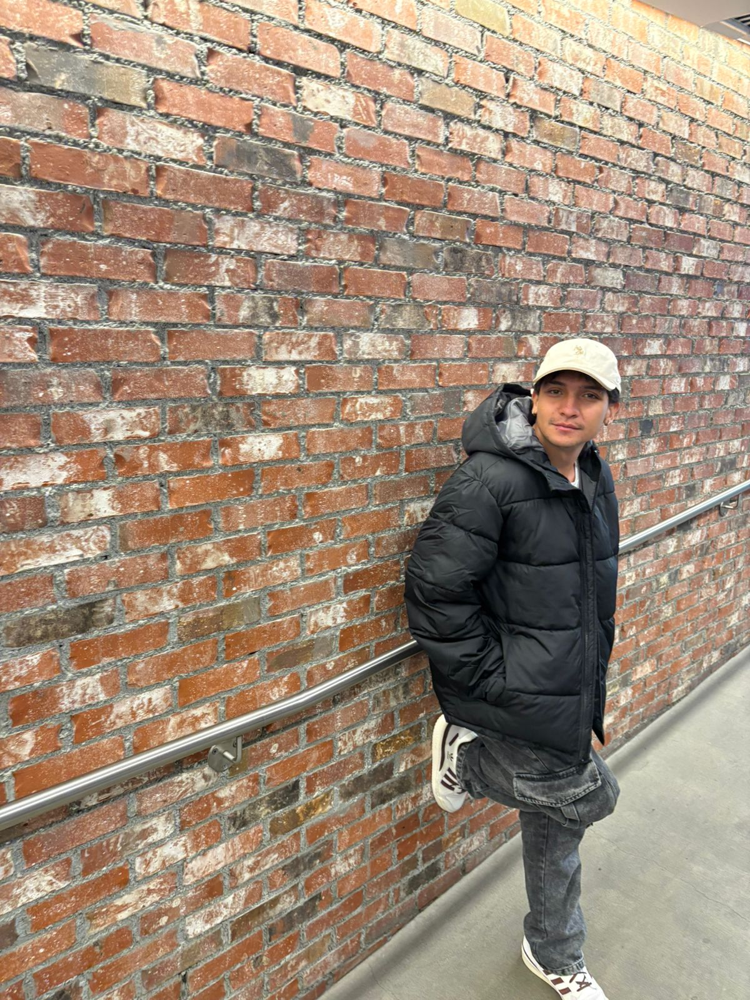
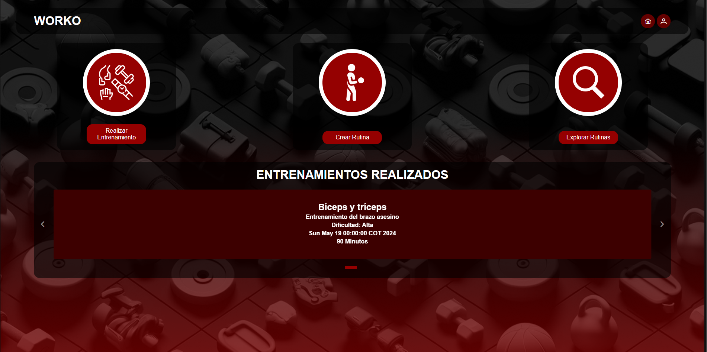
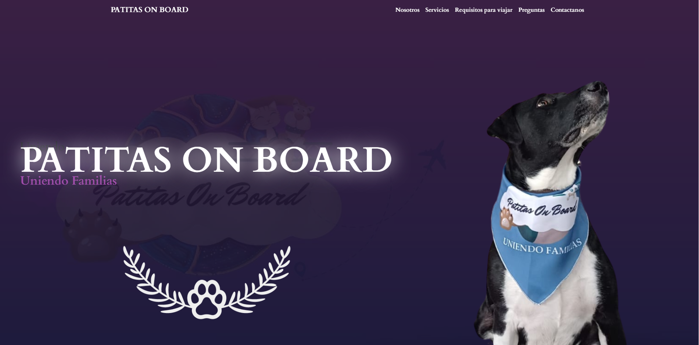
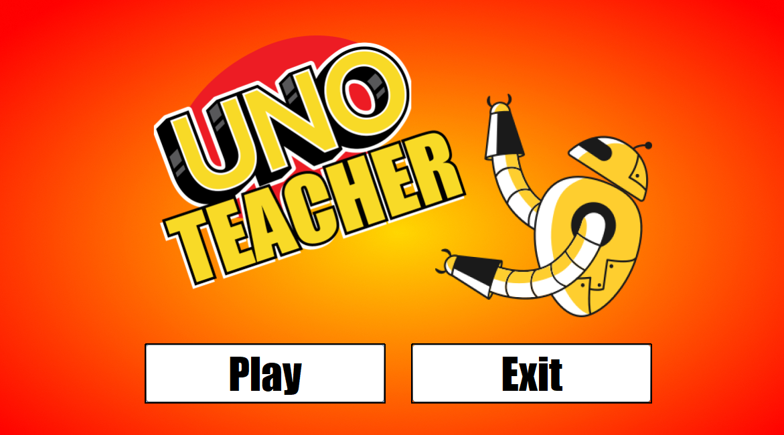

Farmatodo
Actualidad | Desarrollador de automatizaciones en n8n
Actualmente trabajo desarrollando automatizaciones en n8n, optimizando procesos, integraciones y flujos de trabajo para mejorar la eficiencia operativa.

Ingeniero de Sistemas | Desarrollador Backend y Web
Desarrollador con enfoque en programación competitiva, administración de sistemas y desarrollo de software. Tengo experiencia en Java, Python, Angular, Spring Boot, Django, SQL/NoSQL, Linux, servidores y despliegue de aplicaciones web.
Ver proyectosSoy estudiante de Ingeniería de Sistemas en la Universidad El Bosque, con graduación esperada en agosto de 2026. Me destaco por la resolución de problemas, el pensamiento analítico, el trabajo en equipo y la optimización de procesos. Actualmente me enfoco en el desarrollo de automatizaciones para la empresa Farmatodo donde me encuentro prestando mi servicio de practicas, tambien me desempeño como desarrollador backend y web, así como en el despliegue y mantenimiento de soluciones, cuento con un Portfolio Web desarrollado con el framework de Angular.
Actualidad | Desarrollador de automatizaciones en n8n
Actualmente trabajo desarrollando automatizaciones en n8n, optimizando procesos, integraciones y flujos de trabajo para mejorar la eficiencia operativa.
Desarrollador Web
Diseño y desarrollo de un sitio web informativo utilizando Angular, mejorando la visibilidad y accesibilidad de los servicios para los clientes.
Desarrollador Web Freelance
Diseño y construcción de un sitio web informativo en WordPress, administración, mantenimiento y actualización periódica del portal web y del formulario de PQRS.

Plataforma de gestión de entrenamiento y rutinas con enfoque en usabilidad.

Sistema para adopción y cuidado de mascotas con panel administrativo.

Juego web interactivo con lógica personalizada y experiencia visual dinámica.
Java SE, Spring Boot, Angular, TypeScript, Python, Django, HTML5, CSS3, Bootstrap, Flutter.
MySQL, PostgreSQL, Oracle, MongoDB. Experiencia en modelado, consultas complejas, joins, triggers, vistas y optimización.
Linux (Ubuntu, Debian, Kali), Apache, Nginx, servicios, despliegues web, virtualización, redes básicas y monitoreo.
Git, GitHub, GitFlow, CI/CD básico, administración de servidores y automatización de procesos.
Universidad El Bosque — Ingeniería de Sistemas (2022 - 2026)
Graduación esperada: Agosto 2026
Rol: Representante ELITE del GPC-UEB (Grupo de Programación Competitiva)
Certificación: Spring Framework 6 & Spring Boot 3 (Mayo 2024)
Idiomas: Español nativo | Inglés B1+
Teléfono: +57 322 346 4231
Correo: estebanm3j@gmail.com
Enlaces: Portafolio Web | GitHub